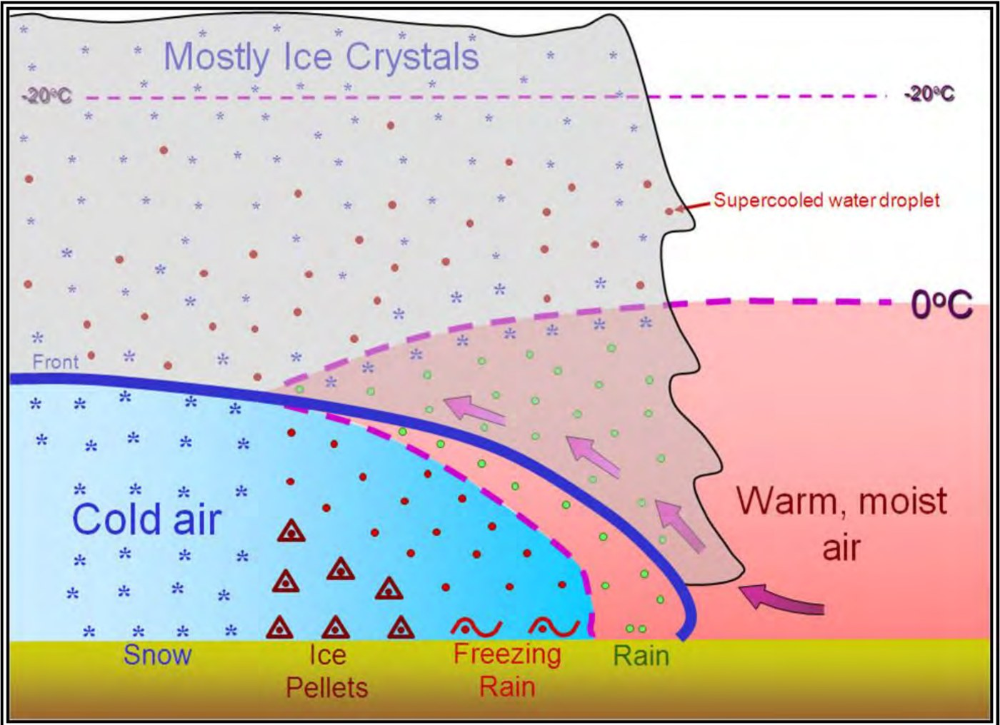
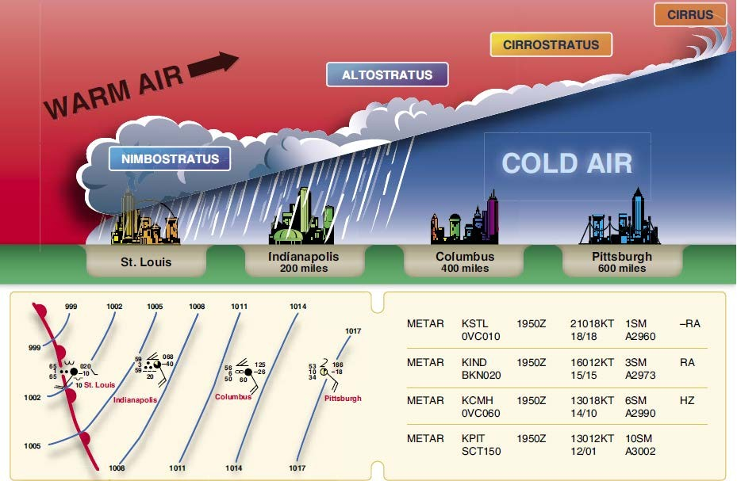

Lesson 02: Cold Weather Meteorology
Learning objectives
- Explain supercooled water and why it is the key ingredient of icing.
- Describe how freezing rain, freezing drizzle, ice pellets and the different snow types form.
- Decode the winter weather groups used in METAR and TAF reports.
Freezing rain: snow melts in a warm layer aloft, then becomes supercooled in the cold air near the surface.
Supercooled water
Liquid water does not automatically freeze at 0 °C. Small, pure droplets can remain liquid well below freezing — in theory down to about −40 °C. Such droplets are called supercooled. They are unstable: when one strikes a surface, such as a wing, a propeller or an engine inlet, it freezes partly or completely on impact.
Supercooled water is found in cloud, fog, drizzle and rain at sub-zero temperatures. It is the source of almost all airframe icing, both in flight and on the ground.
Precipitation types that matter
| Type | METAR | How it forms | Why it matters |
|---|---|---|---|
| Freezing rain | FZRA | Snow melts in a warm layer aloft (a temperature inversion) and falls as rain into a sub-zero layer near the surface, becoming supercooled. | Forms clear ice rapidly. Holdover times are very short or not available. Heavy and moderate freezing rain normally prohibit take-off. |
| Freezing drizzle | FZDZ | Small supercooled drops, often from shallow stratus. It can form without a warm layer aloft. | A source of supercooled large droplets (SLD) in flight; it builds ice on the ground steadily. |
| Freezing fog | FZFG | Fog made of supercooled droplets. | Builds rime on parked and taxiing aircraft and engine fan blades. Engine run-ups may be required. |
| Snow (dry or wet) | SN | Ice crystals that grow in cloud. Wet snow falls when the temperature is near 0 °C. | Wet snow has a high water content and dilutes anti-icing fluid quickly, so holdover times are much shorter. |
| Snow grains | SG | Very small, opaque grains of ice, usually from stratus. | Treated like snow when holdover time guidelines are used. |
| Ice pellets | PL | Raindrops that refreeze while falling through a cold layer. | Fluid failure is hard to see, so special allowance times are used instead of holdover times. |
| Hail / small hail | GR / GS | Ice formed in convective cloud. | No holdover time guidelines for hail; small hail has limited allowance times. |
| Blowing snow | BLSN | Snow lifted from the ground by wind. | Re-contaminates treated surfaces and reduces visibility. Snow intensity is assessed from the falling snow only. |
Precipitation types that matter (2)

Precipitation types that matter (3)
The prefixes -, no sign and + indicate light, moderate and heavy intensity. Because intensity strongly affects holdover times, check it every time you read a report.
Frost
Frost forms when a surface cools to below the frost point of the surrounding air, typically on clear, calm nights through radiative cooling. It can also form on a wing that has been cold-soaked by very cold fuel, even when the air temperature is above 0 °C. This is cold-soaked fuel frost (CSFF). Frost that is still forming is called active frost, and it affects holdover times.
Temperature inversions
In winter, cold, dense air often collects in valleys and over high plateaus, with warmer air above. Inversions trap fog and low cloud for days and create the warm layer aloft that produces freezing rain. On the northern high plateaus and mountain airports of our network, an inversion can mean freezing fog at the field while the air a few thousand feet above is several degrees warmer.

Reading the reports
- METAR: check the weather group (e.g.
-FZDZ BR), the temperature/dew point spread (a small spread means fog or frost is likely), and the runway state or runway condition information. - TAF: look for
TEMPO,BECMGandPROBgroups that bring freezing precipitation or snow within your departure or arrival window. - Trends: a falling temperature with a small dew point spread at dusk is the classic frost and freezing fog set-up.
- Pilot reports, radar and satellite confirm what the reports suggest. A front or a terrain effect can change the precipitation type within minutes.
Brief the expected winter threats before departure: precipitation type and intensity, temperature trend, runway condition and de-icing plan. Update the brief whenever the weather changes.
Key takeaways
- Supercooled droplets freeze on impact; they cause almost all airframe icing.
- Freezing rain needs a warm layer aloft; freezing drizzle and freezing fog do not.
- Precipitation type and intensity drive holdover times — check them every time.
- Cold-soaked fuel can create frost on wings even above 0 °C.
Knowledge check
A METAR reports +SN. What does the “+” mean for your de-icing planning?